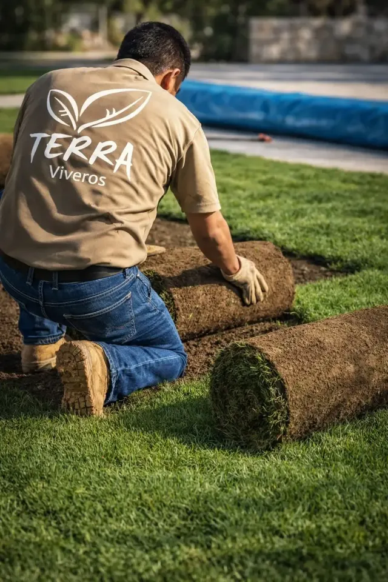

Inicio › Pasto natural › Pasto en rollo
Pasto natural · Tampico, Madero y Altamira
Pasto San Agustín en rollo, instalado en un día. Del campo a tu jardín, sin pasar por bodega.
Lo cortamos para tu pedido y llega del campo cada semana, generalmente el viernes. Preparamos el suelo, tendemos tepes de 40 × 60 cm y te enseñamos a regarlo.
Pasto · 01Tepe 40 × 60 cm
Pasto San Agustín
Stenotaphrum secundatum
Solo pasto, tú lo instalas$85 /m²
Mayoreo, solo pasto, 500 m² o másdesde $60 /m²
Respondemos en menos de 1 hora en horario · Lun a vie 9 a 18 h, sáb 9 a 14 h
Arraigo garantizado de 15 a 20 días con instalación · calcula tu patio

- Empresa
- Viveros TerraVivero, pasto y jardinería
- Registro
- REPSE 773725Contratos con empresas
- Facturación
- CFDI 4.0Persona física o moral
- Desde
- 2007En Cd. Madero y Tampico
- Showroom
- Obregón 209 SurFrente a Walmart, entrando por Banamex
- Instalado
- +500,000 m²En Tamaulipas y la Huasteca
01Prueba
Lo que entregamos, documentado.
Stenotaphrum secundatum es la variedad que mejor aguanta el calor y la humedad del Golfo. Así se ve en cada etapa.




02Precio
Tres formas de comprar, sin letra chica.
Con IVA. El mayoreo es precio de solo pasto: la instalación se cotiza aparte, según tu obra.
| Forma de compra | Unidad | Precio |
|---|---|---|
| Pasto con instalaciónPreparación básica del suelo, tendido en un día, garantía de arraigo de 15 a 20 días y protocolo de riego. | /m² | desde$120 |
| Solo el pastoTú lo instalas. Recoges en el vivero de Obregón 209 o te lo llevamos (la entrega se cotiza según colonia). | /m² | $85 |
| Mayoreo, solo pastoDesde 500 m². Entregas por etapas según avance de obra, factura CFDI 4.0 y REPSE 773725. | /m² | desde$60 |
Calcula el tuyo
Tu etiquetaEstimado
8.00 × 6.00 m = 48 m²
Stenotaphrum secundatum
48 m² × desde $120/m², con IVA. Al medir te damos el precio cerrado.
O 6 mensualidades de $1,103 con tarjeta de crédito (total $6,618).
Mandar esta etiqueta- 3 mensualidades
- desde $2,000
- 6 mensualidades
- desde $5,000
- 9 mensualidades
- desde $15,000
- 12 mensualidades
- desde $15,000
Montos mínimos de cotización por plazo. El total a plazos es mayor que el de contado y te lo mostramos antes de enviarte el link de pago. Tu banco debe aceptar el plan.
03Proceso
Cinco pasos. Dos son tuyos.
Lo que hace que el pasto arraigue es el agua de las primeras semanas. Por eso te lo explicamos ahí mismo, en tu jardín.
Preparación del suelo Nosotros
Día de instalación
Nivelamos, retiramos piedras grandes y agregamos 3 a 5 cm de tierra negra si hace falta.
Tendido de los tepes Nosotros
Día de instalación
Tepes de 40 × 60 cm en patrón de ladrillo, uniones desfasadas y sin huecos, presionados para que la raíz toque el suelo.
Primer riego Tú
Primeras 2 horas
Riega hasta que el agua atraviese el tepe. Te enseñamos cuánta agua darle antes de irnos.
Riego diario Tú
Días 1 a 20
Abundante, de preferencia mañana y tarde, siguiendo el protocolo de 20 días que te dejamos por escrito.
Primera poda Juntos
Día 21
A 4 o 5 cm de altura, cuando ya arraigó. Te decimos cuándo; si tienes mantenimiento con nosotros, la hacemos.
04Garantía
Si no arraiga, lo reponemos.
15–20 días
Garantía de arraigo con instalación contratada.
- Si contratas la instalación y sigues el protocolo de riego de 20 días, garantizamos el arraigo: si una sección no arraiga en esos 15 a 20 días, la reponemos sin costo.
- Pasto cortado para tu pedido; llega del campo cada semana, no son rollos viejos de bodega.
- Protocolo por escrito: qué hacer cada día y qué señales revisar.
- Factura CFDI 4.0 para persona física o moral.
- Si el área tiene sombra profunda, te lo decimos al medir: ahí el San Agustín no es la opción y no lo instalamos con garantía.
05Preguntas
Preguntas sobre el pasto en rollo.
¿Cuánto cuesta el pasto en rollo en Tampico?
$85/m² solo el pasto y desde $120/m² instalado, con IVA. En mayoreo, desde 500 m², cuesta desde $60/m² (solo pasto). Ejemplo: 48 m² instalados × $120 = $5,760.
¿Cuándo llega el pasto fresco?
Una vez por semana, generalmente los viernes, directo del campo. Lo manejamos por lote semanal para no almacenar pasto más de una semana.
¿Cuánto tarda en arraigar?
De 15 a 20 días con riego abundante y diario. El primer riego lo haces tú: te enseñamos cómo y te dejamos el protocolo de 20 días.
¿Lo puedo instalar yo?
Sí. Solo el pasto cuesta $85/m². Recoges en Obregón 209 o te lo llevamos; la entrega se cotiza según tu colonia. La garantía de arraigo aplica cuando nosotros lo instalamos.
¿Facturan a empresas y constructoras?
Sí. Factura CFDI 4.0 a persona física o moral, registro REPSE 773725 y entregas por etapas coordinadas con tu obra.
Cuéntanos tu colonia y tus metros.
Dinos si lo quieres solo pasto o instalado, y mándanos una foto. Si hace falta, vamos a medir sin costo.
Respondemos en menos de 1 hora en horario · Lun a vie 9 a 18 h, sáb 9 a 14 h